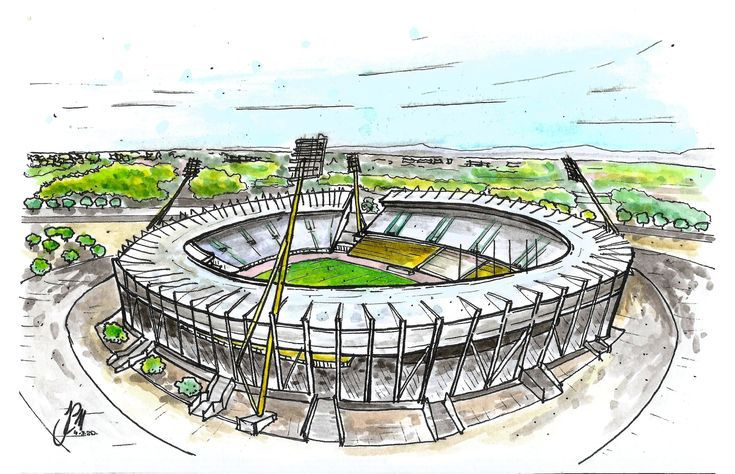
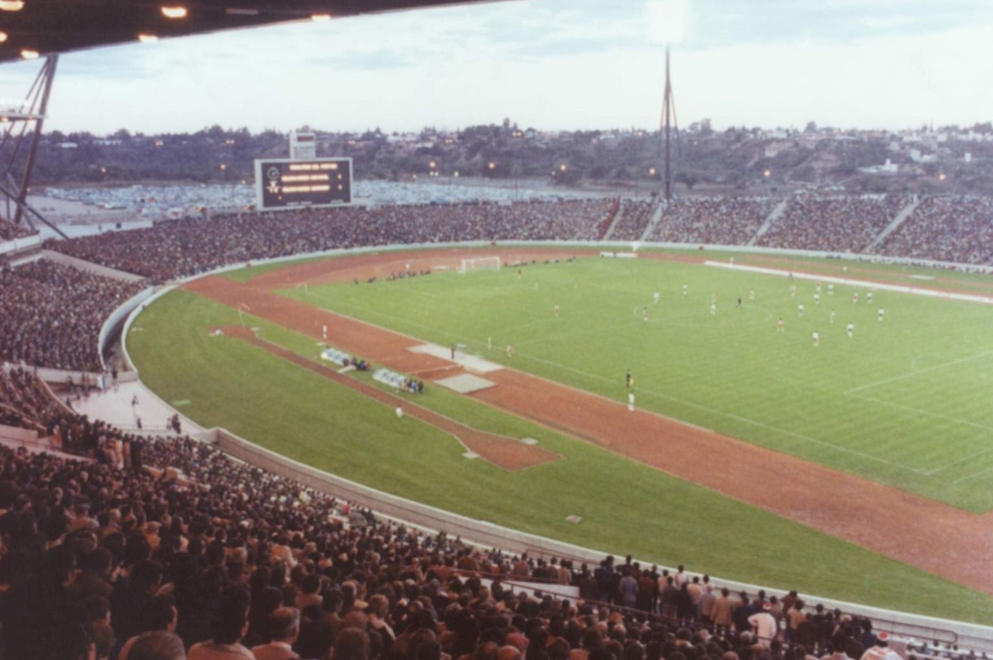
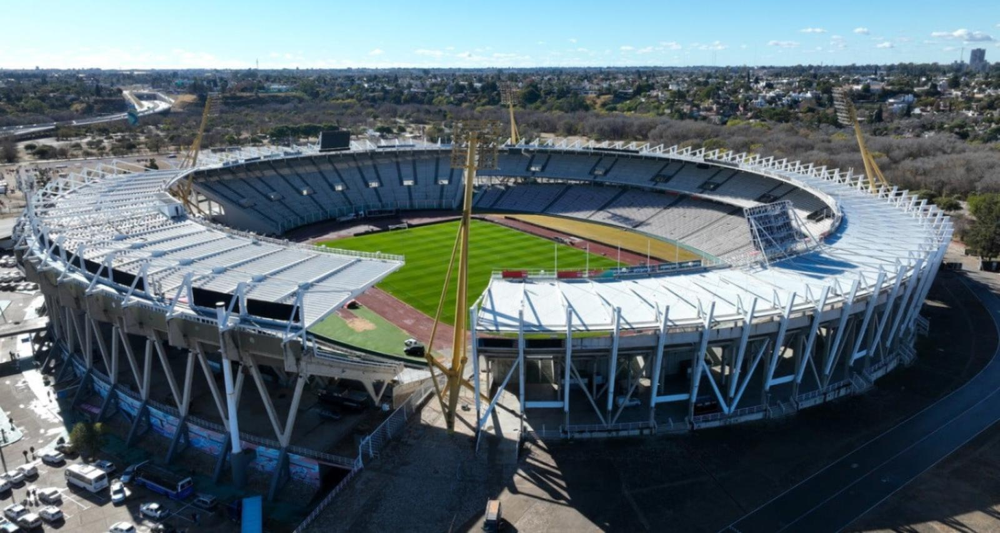
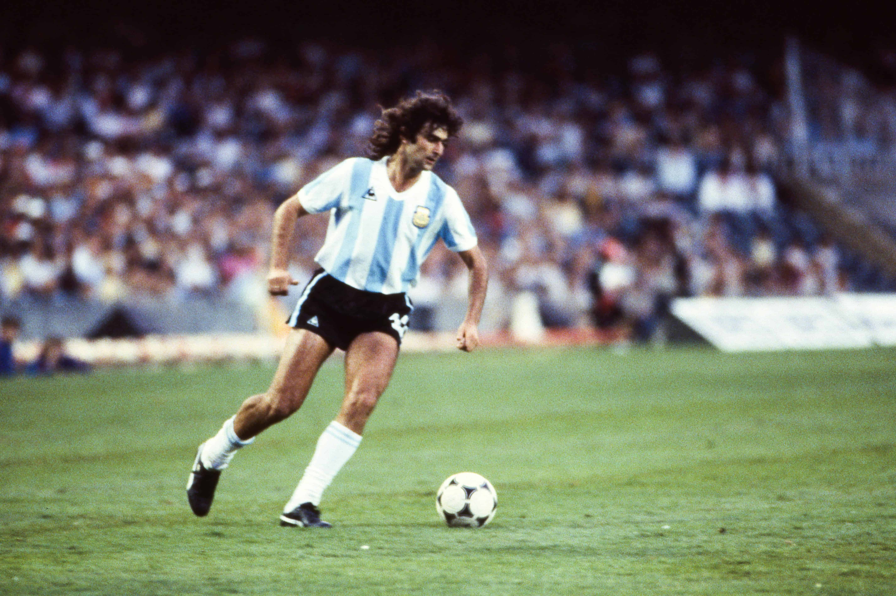

HISTORIA
Inauguracion en 1978:
La inauguración del Estadio Mario Alberto Kempes, conocido en ese entonces como Estadio Córdoba, fue
en 1978, en el marco del Mundial que se jugó en Argentina. Su apertura marcó un antes y un después
en la historia del deporte cordobés, ya que fue construido especialmente para ser una de las sedes
de la Copa del Mundo. Con su diseño moderno para la época y una capacidad que superaba las 40 mil
personas, rápidamente se convirtió en un símbolo de la provincia. Aquel año, miles de hinchas
pudieron vivir la emoción de ver partidos de selecciones internacionales en su propia ciudad, y
desde entonces el Kempes quedó grabado en la memoria colectiva como el corazón deportivo de Córdoba.

Mundial 78:
Durante el Mundial de 1978, el Estadio Córdoba (hoy Mario Alberto Kempes) fue una de las sedes más
importantes del torneo. Allí se jugaron varios partidos de la fase de grupos y encuentros decisivos
que reunieron a selecciones de primer nivel, como Perú, Escocia, Irán y Holanda, que más tarde sería
subcampeona del mundo. El estadio, con su imponente estructura y el fervor de los hinchas
cordobeses, ofreció un marco inolvidable para los visitantes internacionales. La pasión del público
local y la magnitud del evento hicieron que Córdoba se consolidara como un punto clave en la fiesta
mundialista, dejando una huella imborrable en la historia del fútbol argentino.

Cambios y Remodelaciones:
Con el paso de los años, el Estadio Mario Alberto Kempes fue adaptándose a las nuevas exigencias del
fútbol y de los grandes espectáculos deportivos. La remodelación más importante se realizó en 2011,
con motivo de la Copa América, cuando se ampliaron las tribunas, se instalaron butacas individuales,
nuevas torres de iluminación y un moderno tablero electrónico. Estas reformas aumentaron la
capacidad del estadio y mejoraron la comodidad y seguridad para los hinchas. Además, en años
posteriores se incorporaron mejoras en accesibilidad, vestuarios y espacios para la prensa,
consolidando al Kempes como uno de los escenarios deportivos más modernos y completos del país.

Por que lleva el nombre de Mario Kempes:
El estadio lleva el nombre de Mario Alberto Kempes en homenaje al máximo ídolo futbolístico de
Córdoba y una de las grandes leyendas del fútbol argentino. Kempes fue la figura destacada de la
Selección Argentina en el Mundial de 1978, donde se consagró goleador y pieza clave para la
obtención del primer título mundial. Su desempeño y trayectoria lo convirtieron en un símbolo del
deporte cordobés y nacional, motivo por el cual en 2010 el histórico Estadio Olímpico de Córdoba
pasó a llamarse oficialmente Estadio Mario Alberto Kempes.
